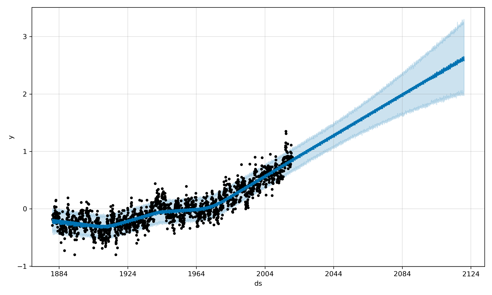

#permafrost #nasa #python #prediction #timeseries #globalwarming
As global temperatures rise, permafrost areas are also warming quickly. Permafrost collapse could lead to an acceleration in carbon dioxide release which will accelerate global warming. Aftermaths can already be seen in arctic environment. Scientists agree that global warming has a direct impact on permafrost thawing, however the fraction and speed of permafrost thaw is thornier to predict. Various model can be used to predict such trends. A time series prediction based on Mean Annual Air Temperature and permafrost interactions will be modeled to predict permafrost evolution.
This project was made at the geoscience department at the University of Oslo.
When : 07.2019
Where : Oslo, Norway
Duration : 10 hours
An environmental vicious circle is taking place, as permafrost thaws. In fact, previously frozen organic in permafrost decomposes and generates carbon dioxide and methane which are released in the atmosphere, leading to an acceleration of global warming. In addition, Arctic areas are warming much faster than the rest of the globe, causing more and more hazards.
Thanks to satellites data of Earth’s surface, evolution of world’s temperatures can be used to predict the evolution of permafrost.
For this article, I assume that everyone is familiar with climate change and global warming.
Scientific evidence for warming of the climate system is unequivocal.
- Intergovernmental Panel on Climate Change
To measure global warming, NASA’s temperatures dataset has been used.
Mean Annual Air Temperatures
(MAAT) from both land and ocean have missing values, therefore they have been interpolated over time. Temperature anomalies represents change in temperatures, here from 1880 to 2019. This change is measured in regards of the mean temperatures of this period:
$$ \forall \omega \in \Omega, \quad T_{anomaly}(\omega) = T(\omega) - \mathbb{E}(T) $$
Temperature anomalies are well used to model and predict climate change. The following models will only use timeseries temperature anomalies from 1880.
Linear and non-linear regressions are applied to fit best the temperature anomalies trend, curve, cycle and irregularities, using time \(t\) as regressor. These functions can be decomposed into different categories, growth \(g\), seasonal \(s\), event \(e\) and variability \(\epsilon\). The regression function \(f\) is then: $$ \forall t \in \mathbb{R}, \quad f(t) = g(t) + s(t) + e(t)+ \epsilon(t) $$
This short project was the opportunity to see directly the evolution of permafrost in arctic regions during a field trip, in Norway.